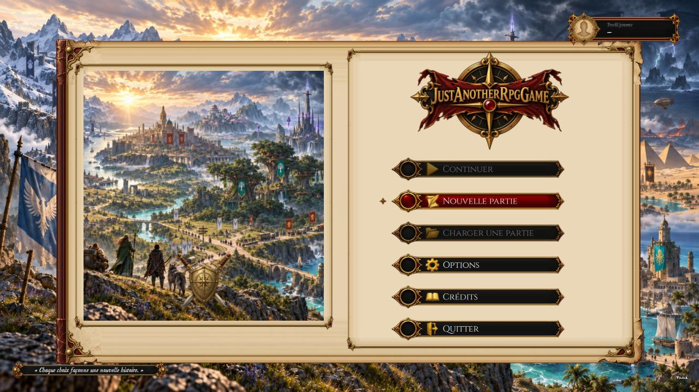
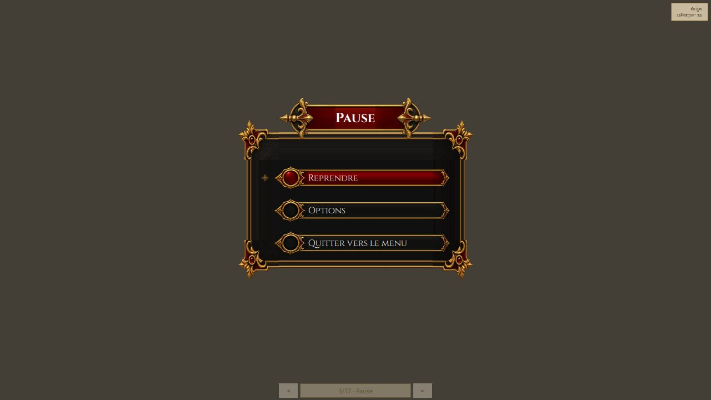

Jouer
Ce guide s'adresse aux joueurs : naviguer dans les menus, régler le jeu, et savoir ce que la version d'aujourd'hui donne à faire.
La version
0.0.1est une démo basique. Elle tient en une quête, « Des pommes pour l'arène », jouée sur trois lieux de la Capitale — le marché de Martpart, le parvis d'Arenarea, et l'Arena of Fate, le colisée d'Arenarea — et se termine par l'une de ses trois fins. Comptez un quart d'heure. Les cartes sont des cartes de principe : des sols en losanges de couleur, des murs en blocs, quelques pièces peintes, et les personnages sont des mannequins (une silhouette de chantier, tête ivoire et torse turquoise) ou des jetons ronds — vert pour vous, jaune pour un personnage de la quête, rouge pour un adversaire. Ce n'est pas un défaut d'affichage : les lieux définitifs, leurs images et leurs personnages viennent avec la version0.0.3(la planification dit où elle en est).
Le menu principal
Six entrées, navigables aux flèches ↑/↓ (ou à la souris) et validées par Entrée (ou clic) : Continuer et Charger une partie (grisées tant que la sauvegarde n'existe pas), Nouvelle partie, Options, Crédits, Quitter.


Parcourir le monde
| Action | Clavier |
|---|---|
| Se déplacer | ↑ ↓ ← →, Z Q S D ou W A S D |
| Interagir (parler, ouvrir) | E ou Espace |
| Choisir une réponse de dialogue | 1 à 9, ou clic ; Échap referme le dialogue |
| Journal de quêtes | ↑ ↓ changent de quête, Échap referme |
| Mettre en pause | Échap |
Le déplacement est libre, en huit directions. On passe d'une carte à l'autre en marchant sur ses portails, et l'on aborde un personnage ou un objet à moins d'une case et demie, de face comme de dos : la case regardée a la priorité, puis la plus proche. Parler à un personnage ouvre un dialogue à réponses ; une réponse qui demande un jet de compétence l'annonce entre crochets, avec la compétence et le seuil à atteindre (« [Persuasion · DD 15] »). Une fois jouée, l'écran montre le d20 tiré, le calcul et l'issue ; un jet raté ne se retente pas, ni dans cette conversation ni dans la suivante.

Le HUD montre les quatre mercenaires et leurs points de vie. Cliquez sur un portrait, ou appuyez sur Tab, pour changer de meneur. Une invite près d'un interlocuteur ou d'un objet indique l'interaction disponible. Les boutons ouvrent Personnage, Équipement, Journal, Groupe et Menu ; Carte reste en haut à droite.
La fiche Personnage reste le registre d'identité du mercenaire. Ses onglets donnent accès aux Capacités de classe (avec le Grimoire), aux Compétences et à l'Équipement. Les flèches près du titre changent de mercenaire. Les listes de capacités, sorts et objets se filtrent par nom. Dans Équipement, sélectionner un objet affiche ses propriétés et la comparaison avec l'objet porté ; Équiper, Retirer et Jeter un exemplaire agissent sur son inventaire. Jeter demande confirmation. L'équipement se change hors combat et reste conservé pendant la partie.

La carte a trois niveaux — le monde, une région, le plan d'une ville — et l'on descend de l'un à l'autre par un repère. Le plan de la Capitale montre ses douze quartiers : Martpart et Arenarea s'ouvrent sur leur carte, où l'on lit où l'on est ; l'Arena of Fate y a son repère, à l'intérieur d'Arenarea ; les dix autres quartiers s'annoncent, grisés. On ne s'y déplace pas : elle sert à s'orienter.
La démo : « Des pommes pour l'arène »
Nouvelle partie vous dépose à la Market Gate, l'entrée du marché de Martpart, dans la peau de Grom Tranche-Écaille, un demi-orc Brawler tiré de la fiche préfabriquée du livre : solide au corps à corps, mais une Persuasion à −1 — la parole n'est pas son fort. Le déroulé, sans en dire plus qu'il ne faut :
- Martpart. Une mère vous interpelle près des étals : son fils a volé trois pommes — sur son propre étal — et un garde l'emmène à l'arène. Acceptez de l'aider : la quête entre au journal. Le portail vers Arenarea est au bout de l'avenue.
- Arenarea. Sur le parvis de l'arène, le garde Ironhand et l'enfant vous attendent. Le garde vous propose de circuler ; deux réponses comptent :
- Convaincre — un jet de Persuasion, DD 15. Réussi, l'enfant est libéré : retournez voir sa mère. Raté, la réponse disparaît, et il ne reste que la suivante.
- Endosser le vol — le garde vous emmène à sa place. Suivez-le : l'escalier de l'arène descend au vestiaire A, dont la porte se referme derrière vous.
- Arena of Fate. Montez sur le sable et parlez au maître d'arène : il lâche six bandits — trois au cimeterre, trois à l'arbalète — sur votre groupe, qui entre en combat au complet, là où il se tient, à gauche du sable ; les bandits partent de la droite. Chaque membre joue à son tour. La victoire libère l'enfant et rouvre les portes ; la défaite est définitive.
- Retour à Martpart par les portails : l'enfant est auprès de sa mère, et le dernier dialogue clôt la démo.
Trois fins, donc : par la parole, par la voie de l'arène, ou la mort. L'écran de mort s'ouvre par-dessus la scène du combat, figée et assombrie : Recommencer rouvre une partie neuve, Menu rend le menu. L'écran « Fin de la démo » dit la voie suivie et ce qui vient ensuite, puis mène aux Crédits ou au Menu. Les deux ferment la partie : « Nouvelle partie » repart de la Market Gate. Aux deux écrans, ← et → changent de bouton, Entrée valide, Échap choisit « Menu ».
Ce que la démo ne contient pas : la sauvegarde (Continuer et Charger une partie restent grisées), un groupe de personnages, l'expérience, le marchand, le son. Tout cela est planifié, et la suite est le système de combat de la 0.0.2.
Combattre
Le combat se joue au tour par tour, sur la carte où il commence : la carte se fige, la grille paraît sur sa zone de combat, et l'exploration reprend à la fin. La souris pilote le même curseur que le clavier.
| Action | Clavier |
|---|---|
| Déplacer le curseur | ↑ ↓ ← → |
| Confirmer (déplacement, cible, action) ; quitter une fois le combat fini | Entrée |
| Changer de cible | Tab / Maj+Tab |
| Changer d'action | Page suivante / Page précédente, ou 1 à 8 |
| Recentrer sur le combattant actif | Retour arrière |
| Finir son tour (aussi le bouton « Fin du tour » dans la barre d’actions) | Espace |
| Fuir, si la rencontre le permet | F |

Avant de confirmer, le curseur annonce ce que coûtera le geste et le jet qu'il faudra atteindre : la prévisualisation est le calcul, pas une estimation. Les déplacements et les coups se rejouent à la vitesse du monde ; tant qu'un mouvement joue, les gestes attendent, et Entrée saute l'animation. Dans la démo, le combat de l'arène est le seul, et il est létal : y tomber ouvre l'écran de mort.
Les onglets Toutes, Actions et Sorts filtrent la barre. Historique affiche les jets précédents ; Détails du calcul déplie les explications de l'action visée. Ouvrir puis refermer la fiche pendant un combat revient au combat. Options (ou Échap pendant le combat) ouvre les réglages puis revient au même tour.
Pause
Échap en cours de partie ouvre la pause : rien n'avance derrière l'écran. Trois choix : Reprendre, Options, Quitter vers le menu.


Le menu d'options
Accessible depuis le menu principal, la pause ou le bandeau. Trois onglets : Général (langue du jeu, journaux de session), Graphismes (plein écran, synchronisation verticale — appliquée au prochain lancement —, compteur de diagnostic, anticrénelage, définition du rendu, ombres, taille du HUD) et Audio (volume général). Appliquer retient les réglages, Annuler les abandonne, Par défaut les rétablit.
Dans Graphismes > Interface en jeu, Taille du HUD va de 75 % à 130 %, par pas de 5 %. Le réglage agrandit ou réduit les portraits, commandes et informations d'exploration et de combat. Il prend effet avec Appliquer et se retrouve au lancement suivant. Le terrain et les menus gardent leur taille. La valeur par défaut est 100 %.
Dans Graphismes > Rendu, deux réglages agissent sur l'image du lieu, dès Appliquer :
- Anticrénelage — Désactivé, MSAA 2×, 4× ou 8× : adoucit le bord des personnages et du décor en volume. La valeur par défaut est MSAA 4×.
- Définition du rendu — 100 %, 125 %, 150 % ou 200 % : au-delà de 100 %, le lieu est dessiné plus grand que la fenêtre puis réduit à l'écran. L'image est plus fine, et demande davantage à la carte graphique. La valeur par défaut est 100 %.
- Ombres — Désactivées, Basses, Moyennes ou Hautes : la finesse des ombres que le soleil et la lune font porter aux personnages et au décor. La valeur par défaut est Moyennes.
Le jour et la nuit
Le monde a une heure. Elle avance pendant qu'on explore — une heure du monde par minute, un jour entier en vingt-quatre minutes — et s'arrête pendant un dialogue ou un combat : la lumière ne change pas pendant qu'on vise. Une partie neuve commence à dix heures du matin.
Le soleil se lève devant, passe à gauche à midi et se couche derrière le lieu : les ombres tournent et s'allongent. Au crépuscule, les lampadaires, les lanternes et les braseros s'allument ; la nuit, la lune éclaire assez pour lire la grille et les personnages. Certains lieux clos — le sous-sol de l'arène — gardent toujours la même heure.

Note — Le réglage du volume atteint réellement le moteur audio, même si le jeu ne joue encore aucun son : le câblage est en place, les bruitages viendront avec le contenu. Aucun réglage affiché ici n'est inopérant — le jeu s'interdit d'en montrer un qui ne ferait rien.
Votre partie, et où elle vit
Trois dossiers sont créés à côté de l'exécutable, et ne partent jamais ailleurs :
| Dossier | Ce qu'il contient |
|---|---|
Logs/ | le journal de la session, à joindre à un rapport de problème |
Crashes/ | le rapport technique écrit si le jeu se termine anormalement |
| les réglages | conservés d'un lancement à l'autre, avec la langue choisie |
Rien n'est envoyé nulle part : le jeu ne communique avec aucun serveur.